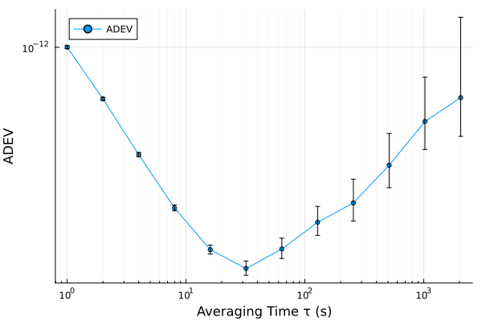
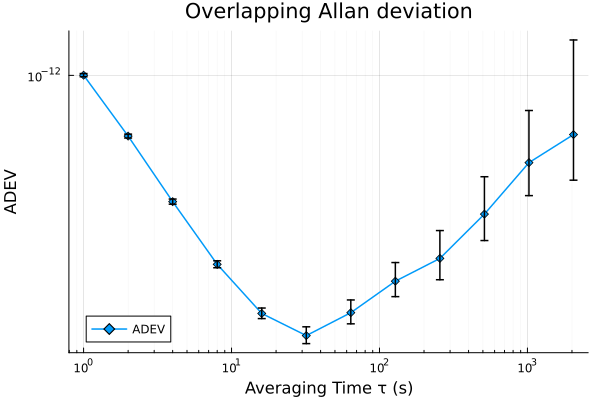
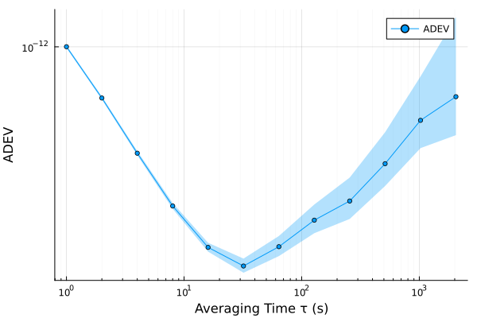
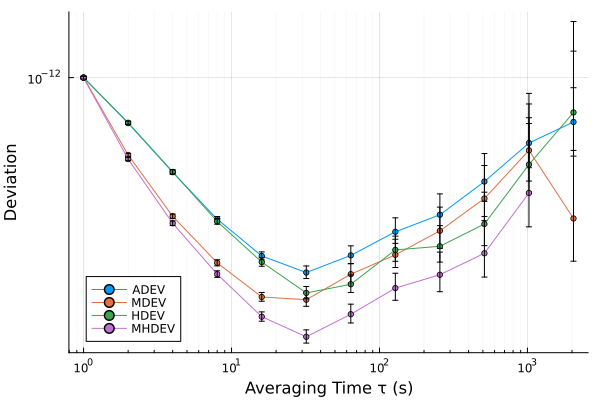
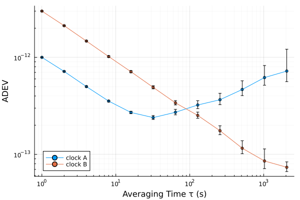
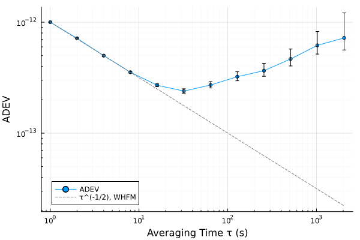
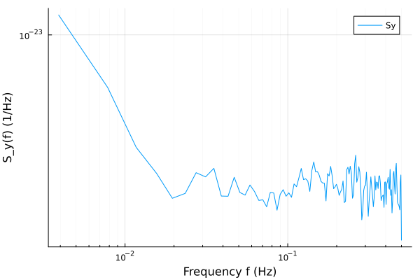
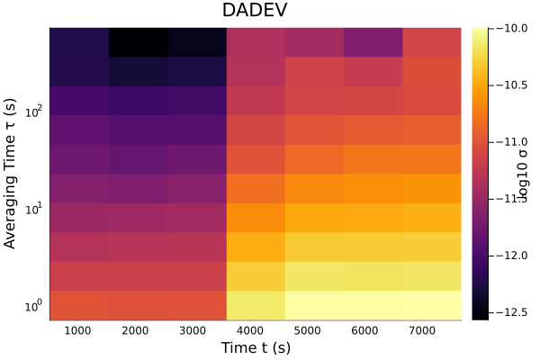
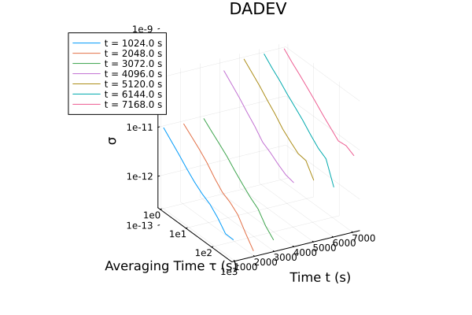

Plotting and tables
SigmaTau ships its plot recipes as a package extension that loads the moment Plots (or anything else that loads RecipesBase) is in the session; the package itself has no plotting dependency. Each section below is a recipe you can paste into the REPL.
using Plots, SigmaTauA single result
plot(result) draws σ(τ) on log-log axes with circle markers at each computed τ, integer-decade ticks, and asymmetric error bars spanning the χ² confidence interval [r.ci[i].lo, r.ci[i].hi]:
using Plots, SigmaTau, Random
Random.seed!(42)
# WHFM at σ_y(1 s) = 1e-12 plus RWFM at 3e-14, 8192 samples at τ₀ = 1 s
p = noise_gen(PhaseData, 8192, 1.0; sigma1 = Dict(0 => 1e-12, -2 => 3e-14))
r = adev(p)
plot(r)
Every default yields to a standard Plots attribute passed at the call site:
plot(r; lw = 1.5, marker = :diamond, ms = 4,
title = "Overlapping Allan deviation", legend = :bottomleft)
Confidence-interval styles
| Call | CI rendering |
|---|---|
plot(r) | error bars (default) |
plot(r; ci_band = true) | filled band |
plot(adev(p; ci = false)) | none, since the ci vector is empty |
plot(r; ci_band = true, fillalpha = 0.3)
Pass confidence = 0.95 to the deviation call to widen the bounds. The bounds are also available as plain vectors through ci_lower(r) and ci_upper(r) for custom styling. mtie and tierms have no interval model and plot as bare curves.
Overlaying deviations and clocks
plot(suite) overlays every result of a StabilitySuite on one set of axes. The default suite is all σy quantities, so the shared ordinate is consistent; time deviations (tdev, htdev, ttotdev) are σx quantities in seconds and belong on their own axes.
suite = stability(p) # adev, mdev, hdev, mhdev
plot(suite; legend = :bottomleft)
To compare clocks rather than deviations, overlay with explicit labels:
p2 = noise_gen(PhaseData, 8192, 1.0; sigma1 = Dict(0 => 3e-12))
plot(adev(p); label = "clock A", legend = :bottomleft)
plot!(adev(p2); label = "clock B")
Slope guides
On log-log axes the slope of σ_y(τ) identifies the dominant noise type (Riley, Jul 2008):
| Noise type | α | ADEV slope | MDEV slope |
|---|---|---|---|
| WHPM | 2 | τ⁻¹ | τ⁻³ᐟ² |
| FLPM | 1 | ≈ τ⁻¹ | τ⁻¹ |
| WHFM | 0 | τ⁻¹ᐟ² | τ⁻¹ᐟ² |
| FLFM | −1 | τ⁰ | τ⁰ |
| RWFM | −2 | τ⁺¹ᐟ² | τ⁺¹ᐟ² |
A reference slope is an ordinary series anchored at a point on the curve:
guide = r.dev[1] .* (r.tau ./ r.tau[1]) .^ (-1/2)
plot(r; legend = :bottomleft)
plot!(r.tau, guide; ls = :dash, color = :gray, label = "τ^(-1/2), WHFM")
Spectral densities
Sy, Sx and L return a SpectralResult. S_y(f) and S_x(f) render on log-log axes; ℒ(f) is in dBc/Hz and gets a log frequency axis with a linear ordinate. The DC bin is dropped.
plot(Sy(p))
Dynamic deviation maps
dadev and dhdev return a σ(t, τ) map. The fixture here steps the white-FM level up tenfold halfway through, an event a static deviation averages over:
y_step = [randn(4096) .* 1e-11; randn(4096) .* 1e-10]
d = dadev(FrequencyData(y_step, 1.0), Octave; window = 2048, step = 1024)
plot(d)
seriestype = :path3d gives the presentation used in the literature, one σ(τ) curve per window time stacked along the time axis; camera = (azimuth, elevation) rotates the view:
plot(d; seriestype = :path3d, camera = (60, 25), legend = :topleft)
Tables
A result prints as an aligned table in the REPL, one row per τ:
adev(p, [1, 10, 100, 1000])StabilityResult(:adev, 4 pts, τ∈[1, 1000] s, with CI)
tau dev neff ci_lo ci_hi edf noise
1 1.001e-12 8190 9.922e-13 1.01e-12 6410 WHFM
10 3.249e-13 8172 3.183e-13 3.32e-13 1120 WHFM
100 3.1e-13 7992 2.874e-13 3.389e-13 74.41 RWFM
1000 6.129e-13 6192 5.124e-13 8.118e-13 10.1 WHFMWith Tables.jl loaded, a result or suite is a row table, so it drops into DataFrame, CSV.write, or PrettyTables for Markdown and LaTeX output:
using Tables, DataFrames, PrettyTables
df = DataFrame(adev(p)) # columns tau, dev, noise_type, ci_lower, ci_upper, edf, neff
pretty_table(df) # text; PrettyTables also has Markdown, HTML and LaTeX backends
DataFrame(stability(p)) # one row per τ per deviation, with a deviation_type columnsave(path, r) and save(path, suite) write the same columns as a tab-separated text file that spreadsheets open directly.
Publication export
size (pixels) and dpi are standard Plots attributes; savefig picks the format from the extension. PDF and SVG are vector formats and ignore dpi:
fig = plot(r; ci_band = true, size = (800, 500), dpi = 300, lw = 1.5,
legend = :bottomleft)
savefig(fig, "adev.png")
savefig(fig, "adev.pdf")For LaTeX documents, Plots.pgfplotsx() (which needs a TeX engine) renders figures whose fonts match the surrounding text.